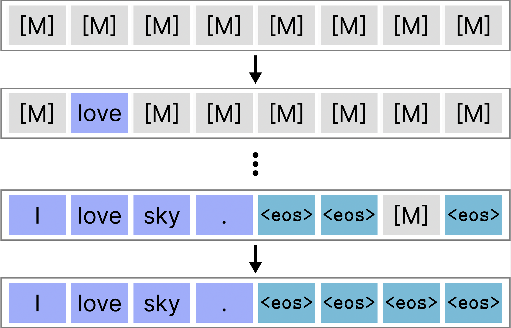
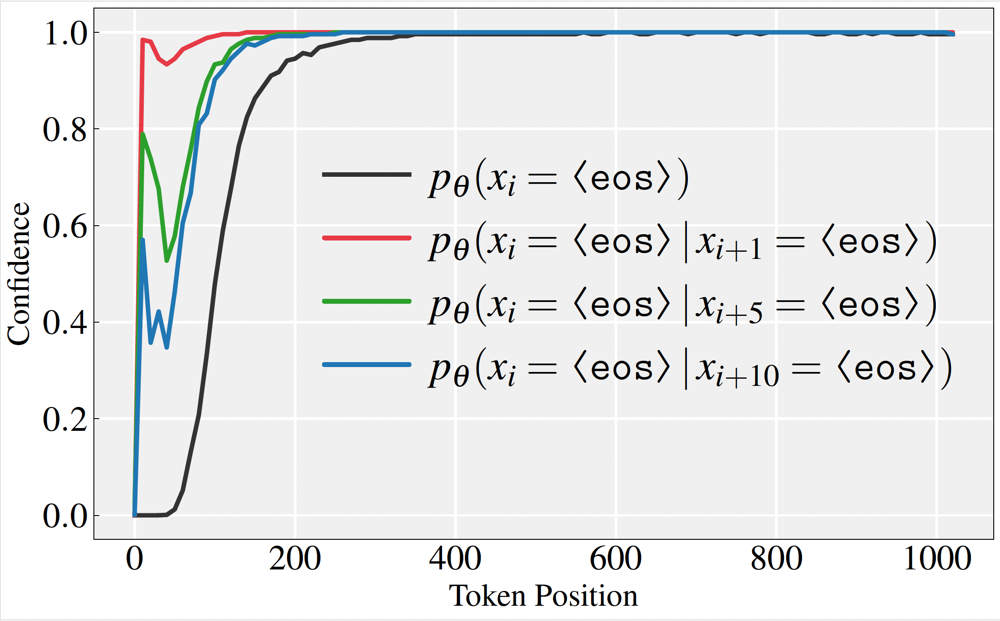
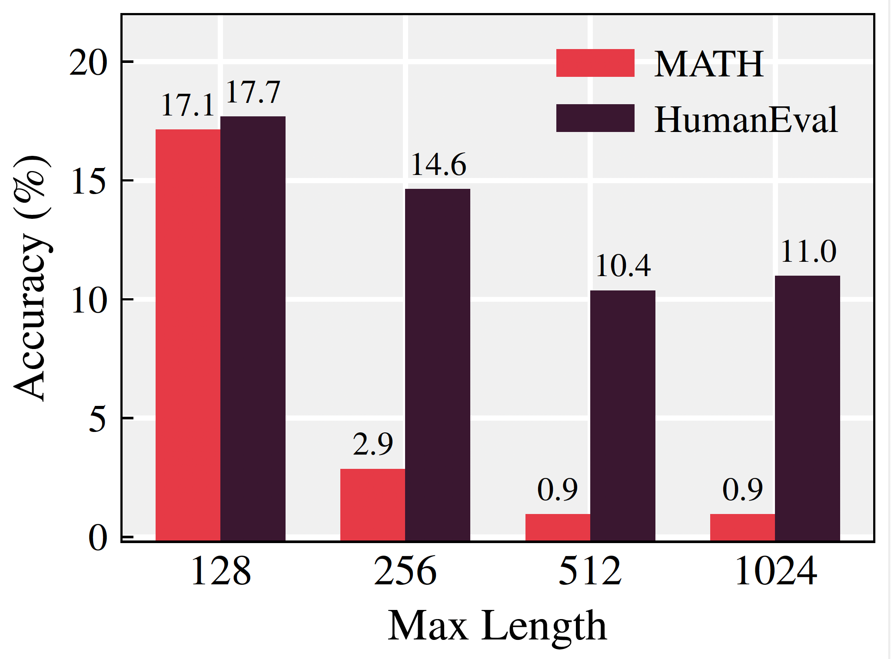
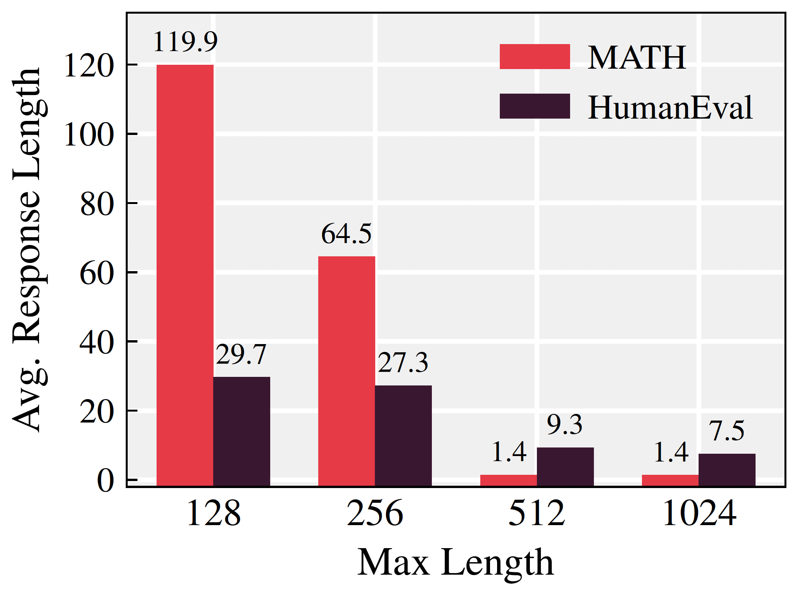
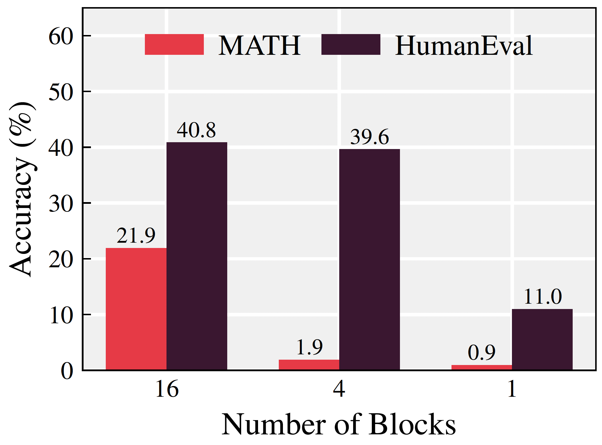
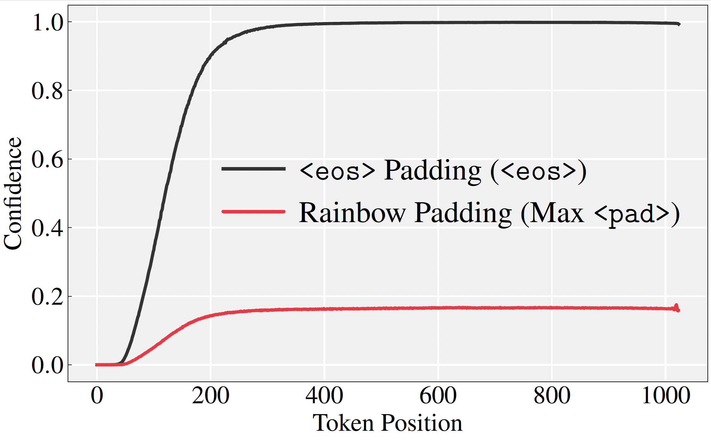
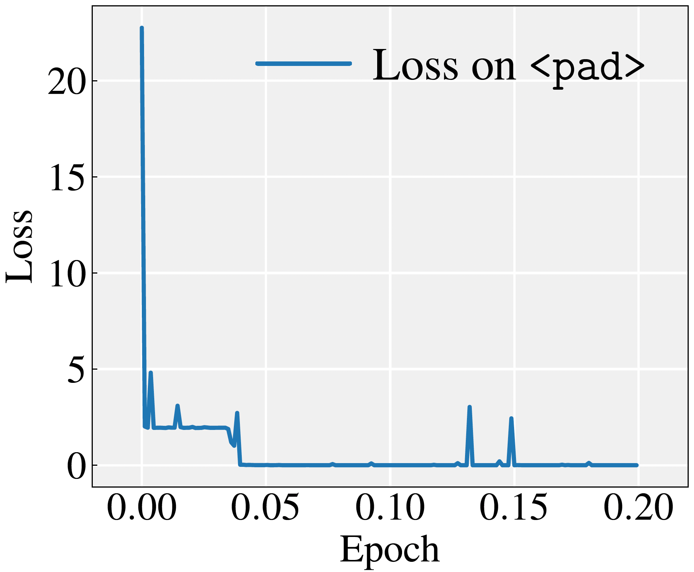

The true end of a response is marked with a single
$$ \mathcal{P}=\{\texttt{\langle pad_0\rangle},\,\texttt{\langle
pad_1\rangle},\ldots,\,\texttt{\langle pad_{K-1}\rangle}\}. $$
We performed two primary experiments: first, we instruction-tuned a base model using Rainbow Padding,
and second, we
applied Rainbow Padding to fine-tune an existing, pre-instruction tuned model.
Rainbow Padding

What is the problem we deal with?


<eos> at later positions create cascading bias affecting earlier positions.
dLLMs cut training corpora into $L$ length of batches. In the instruction-tuning process, shorter
responses are padded
to a fixed length by appending padding tokens. Unlike autoregressie(AR) LLMs which ignores pad tokens
after observing
the <eos>, dLLMs operate on the entire fixed-length sequence at every decoding step.
Here, using padding tokens can be problematic: the model repeatedly observes padding tokens in trailing
positions and
incorporates them into both attention and the loss function. Current dLLMs reuse the same
<eos> token both
to mark the
natural end of a response and to fill unused positions as padding.
This bias is further amplified by adaptive decoding. The probability of predicting
<eos> rises steeply
toward the
sequence end, approaching 1.0 even before. Once a tail position is sampled as <eos> due
to this high
probability,
earlier positions are also biased toward the same outcome. This cascading effect, <eos>
overflow,
causes termination
probabilities to propagate backward from the tail, ultimately collapsing the response.



Heuristic fixes, like semi-autoregressive sampling, harms a core strength of the dLLMs—the ability to unmask tokens in arbitrary order with bidirectional context. It also introduces a sensitive hyperparameter: block number. The performance varies substantially with the choice of block number.


Rainbow Padding is easy-to-learn: It allows the model to master the padding region with minimal effort. This preserves model capacity for learning instruction-response pairs while eliminating the root cause of
<eos> overflow.
While training the model using LoRA, loss on the pad region rapidly converges to near zero within 0.05
epochs.
Results


Rainbow Padding eliminates early termination, substantially improves reasoning and code generation performance of LLaDA and Dream. It also integrates efficiently into existing pre-tuned models: LoRA fine-tuning for a single epoch on minimal data yields significant improvements. Overall, Rainbow Padding provides lightweight and practical fix to a fundamental flaw, suggesting a new standard for instruction-tuning of dLLMs.